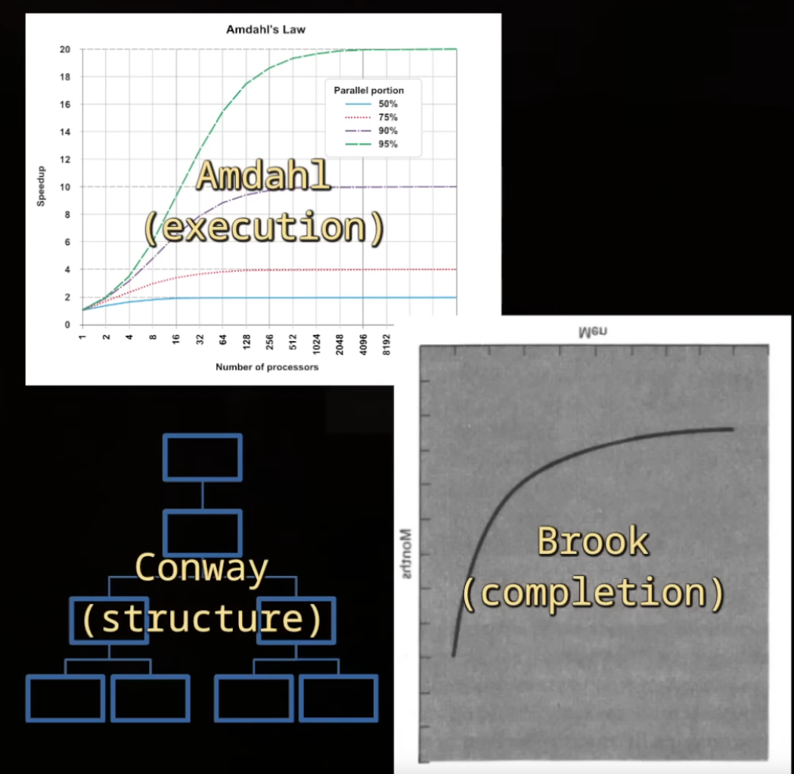

Maintenance and Reuse Principles
DRY (Don't Repeat Yourself)
-
Avoid code duplication.
-
All logic or knowledge should be centralized in a single place.
YAGNI (You Ain't Gonna Need It)
-
Do not implement features before they are actually needed.
KISS (Keep It Simple Stupid)
-
Code should be as simple as possible, avoiding unnecessary complexity.
Code Organization
-
Small tips for stronger code architecture .
-
Talk was aimed at AI, but focuses on code architecture.
-
Discusses simple OOP issues, float problems, and importance of documentation.
-
Highlights decision-making: "Who should solve this problem? The chicken, or the pathfinding system? Maybe a 3rd element (manager, etc.) is the correct solution."
-
Brook's Law, Amdahl's Law, and Conway's Law
-
Brook's, Amdahl's, and Conway's Law .
-
"Exploring promising candidates for 'laws' governing computer software".
-
Found it very interesting.
-

. -
Video concludes "~no real law exists, but the 'Conway nightmare' seems to have materialized".
-